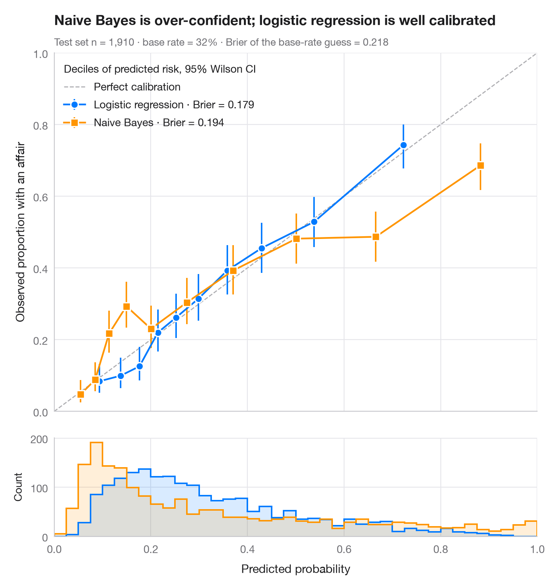

Graphique de calibration
Risque prédit et risque observé par décile, avec IC de Wilson, histogrammes des prédictions et score de Brier.

Un modèle peut bien ordonner les cas (AUC élevée) tout en fournissant de mauvaises probabilités. Le diagramme de fiabilité le vérifie : les cas de test sont regroupés en déciles de risque prédit, et la prédiction moyenne de chaque classe est mise en regard du taux d'événements observé, avec un intervalle de Wilson à 95 %. Un modèle bien calibré se situe sur la diagonale ; des points en dessous signifient que le modèle est trop confiant. Les histogrammes en dessous montrent où tombent réellement les prédictions.
Les données sont l'enquête de Fair sur les relations extraconjugales (sm.datasets.fair), répartie 70/30. Une régression logistique et un modèle bayésien naïf gaussien de scikit-learn sont comparés ; le score de Brier (brier_score_loss, plus il est bas, mieux c'est) résume la justesse des probabilités, et les intervalles proviennent de proportion_confint(method="wilson").
Le code et le texte à l'intérieur des figures sont en anglais.
import matplotlib.pyplot as plt
import numpy as np
import pandas as pd
import statsmodels.api as sm
from sklearn.linear_model import LogisticRegression
from sklearn.metrics import brier_score_loss
from sklearn.model_selection import train_test_split
from sklearn.naive_bayes import GaussianNB
from statsmodels.stats.proportion import proportion_confint
df = sm.datasets.fair.load_pandas().data
X, y = df.drop(columns="affairs").to_numpy(), (df.affairs > 0).astype(int).to_numpy()
X_tr, X_te, y_tr, y_te = train_test_split(X, y, test_size=0.3, stratify=y, random_state=1)
models = {"Logistic regression": (LogisticRegression(max_iter=1000), "#007AFF", "o"),
"Naive Bayes": (GaussianNB(), "#FF9500", "s")}
fig, (ax, axh) = plt.subplots(2, 1, figsize=(7, 7.4), sharex=True,
gridspec_kw=dict(height_ratios=[4, 1.1], hspace=0.05))
ax.plot([0, 1], [0, 1], color="#AEAEB2", lw=1, ls="--", label="Perfect calibration")
bins = np.linspace(0, 1, 41)
for name, (clf, c, mk) in models.items():
p = clf.fit(X_tr, y_tr).predict_proba(X_te)[:, 1]
# Group predictions into deciles of predicted risk
tab = (pd.DataFrame({"p": p, "y": y_te})
.assign(bin=lambda d: pd.qcut(d.p, 10, labels=False, duplicates="drop"))
.groupby("bin").agg(pred=("p", "mean"), obs=("y", "mean"), k=("y", "sum"), n=("y", "size")))
lo, hi = proportion_confint(tab.k, tab.n, method="wilson")
ax.errorbar(tab.pred, tab.obs, yerr=[tab.obs - lo, hi - tab.obs], fmt=mk + "-", color=c,
ms=7, mec="white", mew=1.2, lw=1.6, capsize=0, elinewidth=1.4,
label=f"{name} · Brier = {brier_score_loss(y_te, p):.3f}")
axh.hist(p, bins=bins, color=c, alpha=0.15, lw=0)
axh.hist(p, bins=bins, color=c, histtype="step", lw=1.4)
ax.set_xlim(0, 1); ax.set_ylim(0, 1); ax.set_aspect("auto")
ax.grid(axis="x")
ax.set_ylabel("Observed proportion with an affair")
ax.legend(loc="upper left", alignment="left", title="Deciles of predicted risk, 95% Wilson CI")
axh.set_xlabel("Predicted probability")
axh.set_ylabel("Count", fontsize=10)
axh.grid(axis="x")
ax.set_title("Naive Bayes is over-confident; logistic regression is well calibrated", pad=26)
ax.text(0, 1.02, f"Test set n = {len(y_te):,} · base rate = {y_te.mean():.0%} · "
f"Brier of the base-rate guess = {y_te.mean() * (1 - y_te.mean()):.3f}",
transform=ax.transAxes, fontsize=9.5, color="#6E6E73")
plt.show()
Les figures utilisent le style Statlas (facultatif) : ajoutez plt.style.use("statlas.mplstyle") pour obtenir exactement le même rendu.
Comment citer
Statlas est créé et maintenu par Thierry Warin. S'il vous a été utile dans vos travaux, merci de le citer.
Warin, T. (2026). Calibration plot. In Statlas: The Python Gallery of Statistical Graphics. https://warint.github.io/statlas/model-diagnostics/calibration-plot/
@misc{warin2026statlas,
author = {Warin, Thierry},
title = {Statlas: The Python Gallery of Statistical Graphics},
year = {2026},
howpublished = {\url{https://warint.github.io/statlas/}},
note = {Source code: https://github.com/warint/statlas}
}Plus dans Diagnostics de modèles

Diagnostics des résidus
Le panneau classique 2 × 2 d'un modèle linéaire — linéarité, normalité, variance, effet de levier.
plot(lm) / performance::check_model()
Graphique d'influence
Résidus studentisés en fonction de l'effet de levier, avec des bulles proportionnelles à la distance de Cook.
car::influencePlot()
Courbes ROC
Trois classificateurs comparés par courbe ROC, AUC avec IC à 95 % par bootstrap et point de Youden.
pROC::ggroc() / pROC::ci.auc()